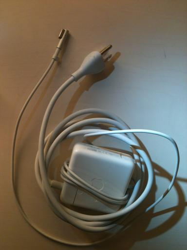
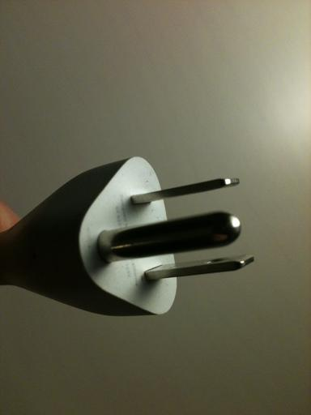
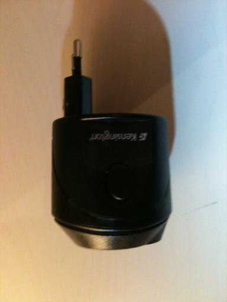
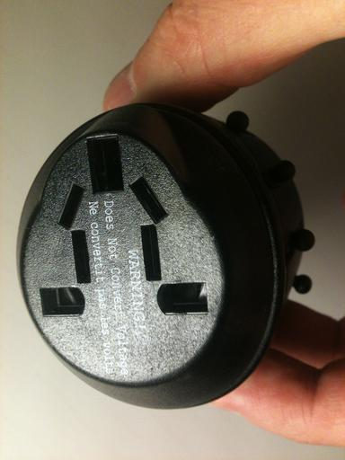
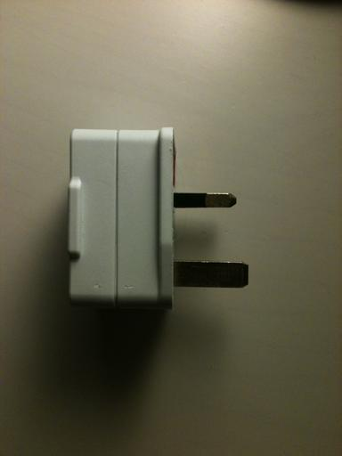
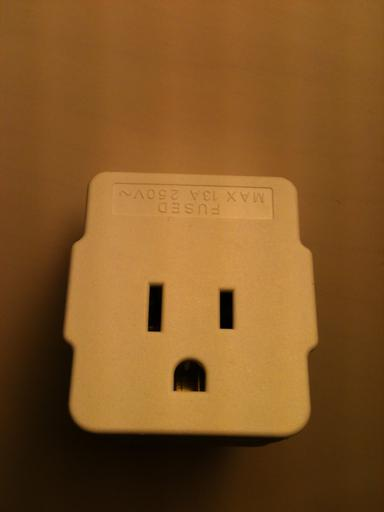
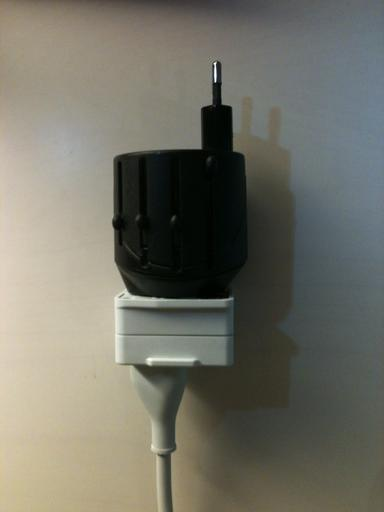

Does Your Software Look Like This?
I have a Mac. It has a power adapter:

The plug that goes into the power outlet looks like this:

I am in Oslo. Their power outlets look like this:
I brought a universal adapter with a double-round mode:

but its input looks like this:

Whoops: a North American plug with a round ground pin won’t fit. My old Mac adapter fit–it didn’t have the ground pin, just two flat power pins that folded down into the brick. That’s why I thought this would work, but no, I upgraded my power adapter, and it broke backward compatibility.
Luckily, the shop at Heathrow Airport sells gadgets that have UK output pins:

and three-pin round-ground North American input slots:

which means I can cobble this together to recharge my laptop:

Tomorrow, I will show this to students in the workshop I’m teaching and ask, “Does your software look like this?”